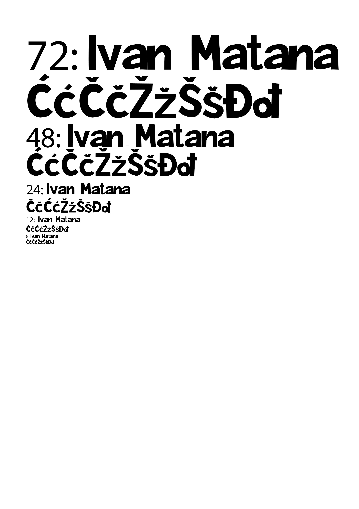
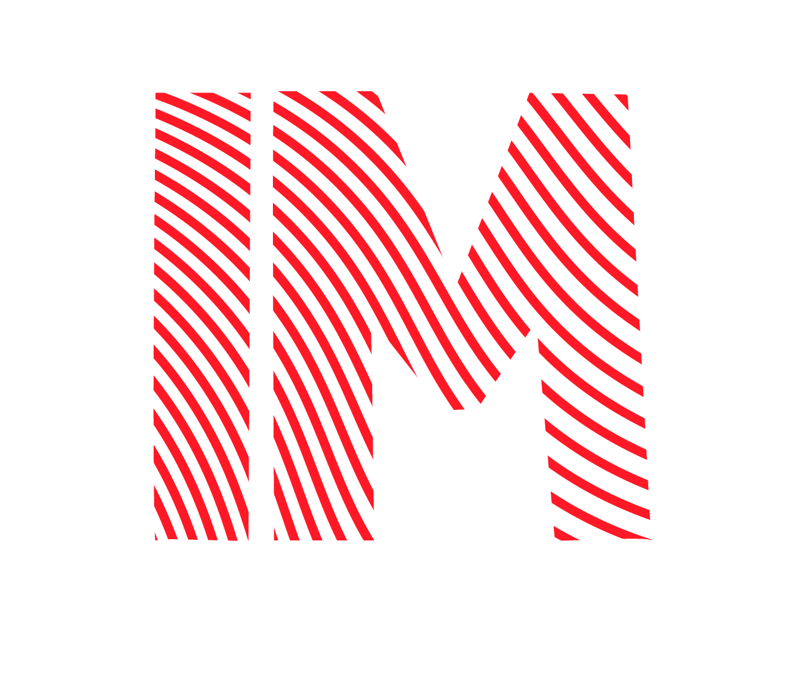
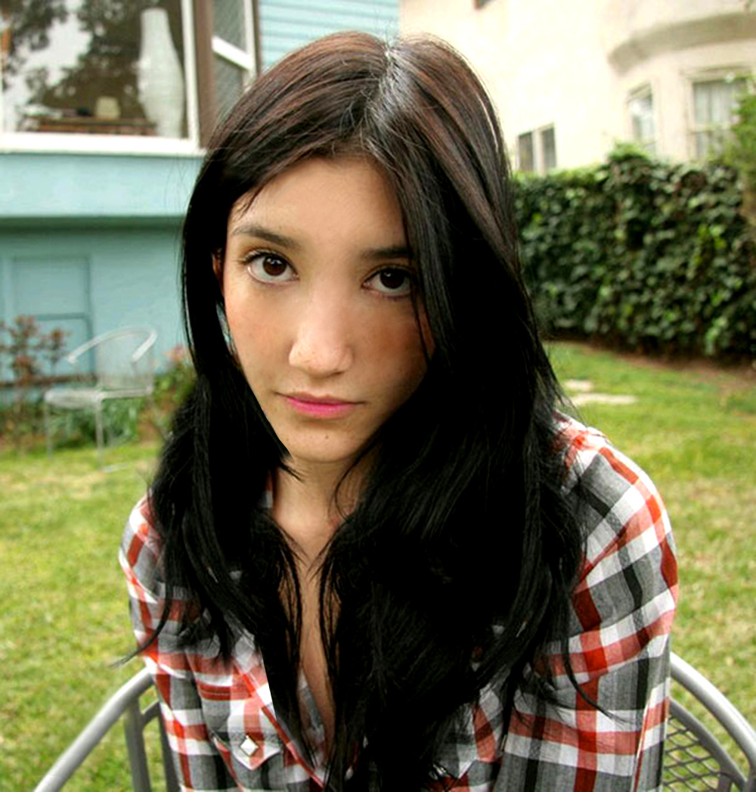
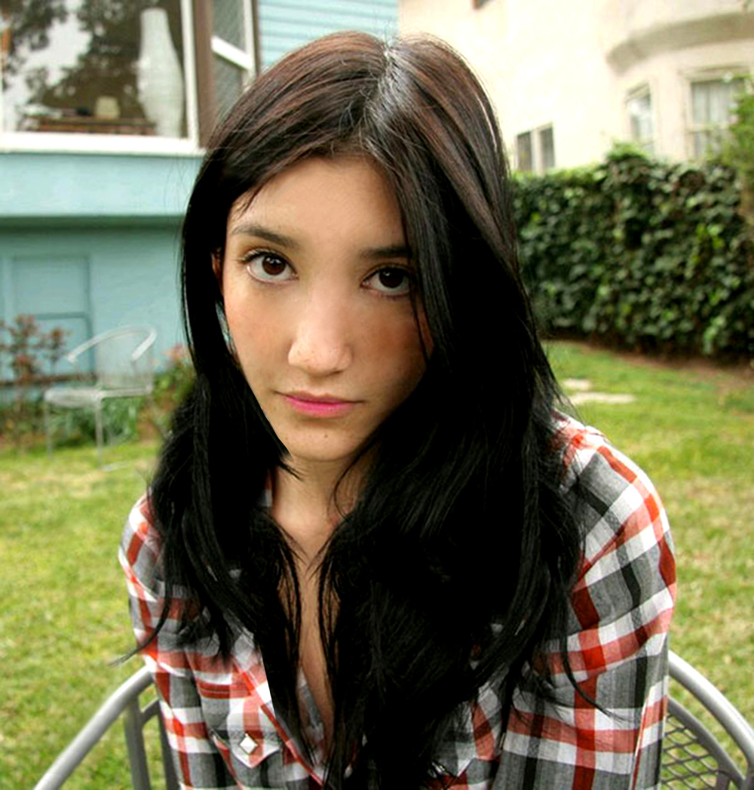

Navigacijska lista:
Na ovoj stranici ćemo proći kroz vježbe koje sam napravio na predmetu Digitalni Multimedij 1.
Za vježbu broj 1 bio je zadatak dizajnirati svoj font.
Kreirati proizvoljan broj vlastitih krivulja čije su točke poravnate prema mreži vašeg koordinatnog sustava, definirajte im boju i debljinu obruba te između njih napravite interpolaciju (Blend). Koristeći vlastiti font s prošle vježbe preko krivulja ispišite tekst i od njega napravite masku. Vodite računa o veličini teksta i njegovom položaju u odnosu na krivulje kako bi se maska što bolje vidjela. Spremite vježbu u PDF formatu.

- uvođenje slika u dokument
- definiranje swatch boja u RGB, CMYK, HSB sustavima boja
- transparencija (Opacity)
- crtanje zatvorenih objekata, multipliciranje i transformacije (rotacija, zrcaljenje, skaliranje)
- rad sa slojevima (Layers); grupiranje objekata
- apliciranje swatch boja na objekte
- složeni objekti koji se sastoje od više zatvorenih staza (krivulja)
- dodavanje, oduzimanje staza postojećim objektima
- linearni i radijalni gradijent
- "mesh" gradijent
- tehnike digitalnog retuširanja fotografija za postizanje realističnog efekta
- selekcije (Lasso Tool)
- uklanjanje nedostataka na slici:
zamućivanjem (Dust&Scratches, Median)
kloniranjem (Clone Stamp, Heal)
kopiranjem selekcije u layere
- lokalne i globalne korekcije boja (Burn/Dodge brush, Levels, Brightness/Contrast)
 

- tehnike digitalnog koloriranja crno bijelih fotografija
- selekcije – Magnetic Lasso Tool
- selekcije – Quick Mask Mode
- spremanje selekcija za kasniju upotrebu
- Adjustment layer – metoda kolorizacije bez uništavanja boja na originalnoj slici
- Layer mask – maksa aplicirana na layer koja skriva ili otkriva efekte na layeru
- tehnike selektiranja različitih tipova elemenata slike
- Polygonal Lasso za jednostavne selekcije
- Magnetic Lasso Tool, Quick Mask Mode – selekcije elemenata sa oštrim rubovima
- selekcije uz pomoć kanala – za selektiranje zaamućenih, neravnih i rubova sa puno detalja
- korekcije boja – Color Balance, Levels
- izrada realistične sjene
Ova vježba se bavi osnovama obrade video materijala i uvođenjem multimedije u video projekt. Rezultat vježbe će biti kinemagraf čija je karakteristika spajanje statične i pokretne slike.
- rezanje i spajanje video isječaka iz više izvora
- video efekti
- brisanje i dodavanje zvuka
- dodavanje i obrada teksta
U ovoj vježbi prelazimo na stvaranje web sadržaja, kao nosioca multimedije na webu. Multimedijski sadržaj koji želimo prenijeti preko weba se odnosi na tekst, sliku, video i zvuk. Web stranice se kreiraju putem označnog jezika HTML (Hypertext Markup Language), kojim definiramo tip sadržaja koji želimo prikazati. HTML dokumente kodiramo u različitim tekst editorima te spremamo dokumente kao .html datoteke.
Primjer ove vježbe je ovaj zadatak.